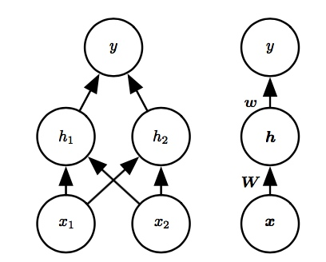

所属 Topic：深度学习 · 类型：概念
第六章 深度前馈网络#
前馈神经网络，也叫做**多层感知机**(MLP),其目标是近似某个函数f^*。前馈网络定义了一个映射函数y=f(x,\theta),然后学习参数\theta的值，从而近似函数f^*
前馈
因为在模型的输出和模型本身之间没有反馈链接。一些基本术语概念：
- 输出层，隐藏层，
6.1 例子：学习XOR#
【例】学习异或逻辑，即当两个二进制值中恰好有一个是1时候返回1，其他都返回0.
【解法1】可以考虑按照回归分析的思路，使用均方误差作为损失函数(实际中对于二进制数据建模时不适合用MSE)。f(x,w,b)=x^Tw+b
可以利用矩阵求解方程得到w=0,b=0.5， 线性模型得到的结果是任意一点都为0.5
==> 主要问题，该问题其实不是一个线性问题
【解】另一种思路：使用一个模型来学习一个不同的特征空间，在这个空间上线性模型能够表示这个问题。

构造一个非线性函数h，一般默认的推荐是**整流线性单元**ReLU:
$g(z)=max(0, z)$
所以整个网络是f(x)=w^Tmax(0, w^Tx+c)+b
6.2 基于梯度的学习#
很多神经网络的非线性导致代价函数变得非凸，所以一般神经网络的训练一般使用迭代的方法。
凸优化从任何一种初始参数都会收敛，而用于非凸损失函数的随机梯度下降没有这种收敛的保障，并且对参数的初始值比较敏感。
代价函数#
多数情况下，对于一个参数模型f(y|x,\theta)，
- 可以简单的使用最大似然原理。即利用训练数据和模型预测之间的**交叉熵**作为代价函数。
- 有时候也会出现仅预测在给定x条件下y的某些统计量。
最大似然学习条件分布
大多数的神经网络采用最大似然的训练方法。这意味着代价函数就是负的对数似然。它与训练数据
学习条件统计量
这里好像有个和高统中类似的结论。比如
$f^*=arg min_{f} E_{x,y~p}||y-f(x)||^2$
可以得到f^*=E_{y~p(y|x)}(y)
输出单元#
其实代价函数的选择与输出单元是有一定关系的
- 高斯输出分布的线性单元
线性输出层一般用来产生高斯分布的均值。
- 伯努利输出分布的sigmoid单元
- 多项分布输出的softmax单元
对于想要表示具有n个离散取值的变量分布时候，一般可以用softmax函数。其是sigmoid函数在多分类问题上的推广。
$softmax(z_j)=\frac{exp(z_i)}{\sum_j exp(z_j)}$
6.3 隐藏单元#
隐藏层单元的选择没有一个固定的指导标准，一般默认选择**整流线性单元**
整流线性单元的一些扩展
其扩展形式主要是基于z_i<0时候使用一个非零的斜率\alpha_i
绝对值整流、渗漏整流线性单元，参数化整流线性单元。
maxout单元
maxout将单元将z划分成k个组，每个组上的取值为其最大值。
sigmoid，tanh
6.4网络结构设计#
网络结构设计主要是设计网络的**深度**和每一层的**宽度**
1. 万能近似性质
万能近似定力：一个前馈神经网络,如果具有线性输出层和至少一个具有任何一种“挤压”性质的寄货函数的隐藏层。只要给予网络足够数量的隐藏单元，它可以以任意精度来近似任何一个有限维空间到另一个有限维空间的Borel可测函数。
万能定理从理论上说明无论我们想要学习什么函数，都有一个大的MLP可以进行这个。但是我们并不能保证算法能够学习到这个函数